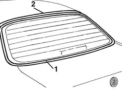
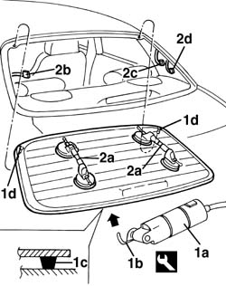
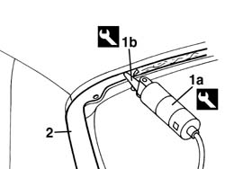
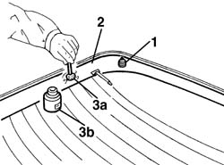
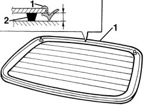
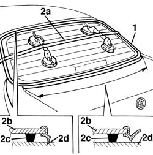

7035B14 rear window glass r r includes cleaning of housing
- Path
- Procedures > 70 FITTINGS > 7035 BODYSHELL WINDOWS > 7035B rear window > 7035B14 rear window glass r r includes cleaning of housing
- Kind
- repair procedure (removal / refitting; the operation number is the code)
- Applies to
- all engines; all production periods
- Interactive page
- https://sloeber94.github.io/elrnDB-a156/en/#/3238779
Applies to: all engines; all production periods
 Removing
Removing
 Refitting
RefittingProtect the cover and the body side with suitable lining
1. Remove the perimetric gasket of the rear window
2. Apply the adhesive tape as protection of the bodywork's edge in the indicated compartments

Applies to: all engines; all production periods
1. Use a vibration knife(1a), with blade (1b) and cut the dope bead which locks the rear window. Work at the exterior of the vehicle While cutting pay attention to the centring pins of the rear window.These pins can oppose resistence to the disconnection of the rear window
 | Name | Country |
|---|---|---|
1a | Vibrating knife | 1.823.011.000 |
| Name | Country |
|---|---|---|
1b | Blade | 1.823.022.000 |
2. Apply on the rear window the section cup toggle (2a) and with the help of a second operator remove the rear window and disconnect the electric connection (2b), the connections between the antenna central and rear window,(2c, 2d),then place the rear window on a support stand
 | Name | Connector |
|---|---|---|
2b | Heated rear windscreen |

Applies to: all engines; all production periods
Refitting
Removing1. Use the vibration knife (1a) and blade (1b), cut and level the dope string in the rear window compartment , so to leave a thickness between i 0,25 and 1 mm avoiding to scratch the paint
The thckness of the dope bead on the compartment will be the support for the new glueing
| Name | Country |
|---|---|---|
1a | Vibrating knife | 1.823.011.000 |
| Name | Country |
|---|---|---|
1b | Blade | 1.823.010.000 |
2. Clean the rear window compartment with compressed air and degrease with heptane
If necessary make the suitable retouches to the paint

Applies to: all engines; all production periods
If necessary make the suitable retouches to the paint
1. Install the centring pins
2. Degrease the silk-screen printing rear window perimeter with heptane
3. Apply with the wick (3a) given in kit, the adhesion promotor for glass (primer) (3b) on the silk-screen printing perimeter
Wait for 15 minutes at least before proceeding at the next operation, so to allow the evaporation of adhesion promotor thinner (primer).

Applies to: all engines; all production periods
1. Place the gasket on the rear window perimeter
Avoid to touch with the hands the parts just treated
Use a new gasket
2. With a pneumatic tire gun expel a string of dope along the perimeter of the rear window in most possible regualr way
Start the operation from the centre of the inferior side and procede without interreptions along the whole rear window perimeter

Applies to: all engines; all production periods
1. With the help of a secondo operator connect the electric connections and place the rear window in its seat after the application of the dope
2. Place the timing belt (2a) as shown in the figure and energize so that to produce a uniform pressure along the rear window so to guarantee the correct coupling between the chrystal(2b), dope (2c) and rear window compartment (2d)

Applies to: all engines; all production periods
Verify the absence of infiltration points
Apply soaped water with sponge along the exterior perimeter and blow from the interior with compressed air so to point out possible infiltrations
Place the perimetric gasket